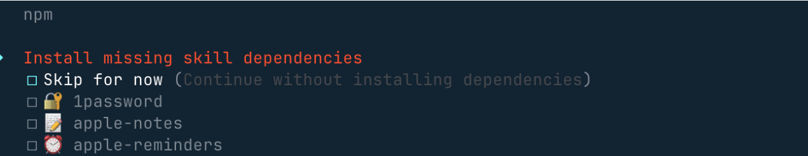
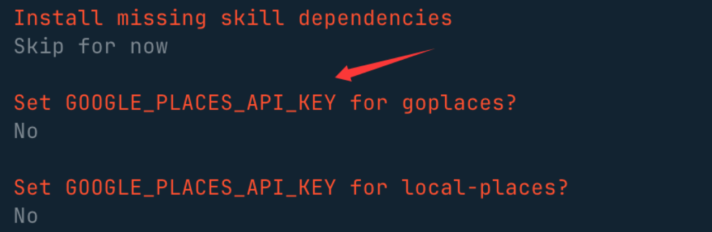
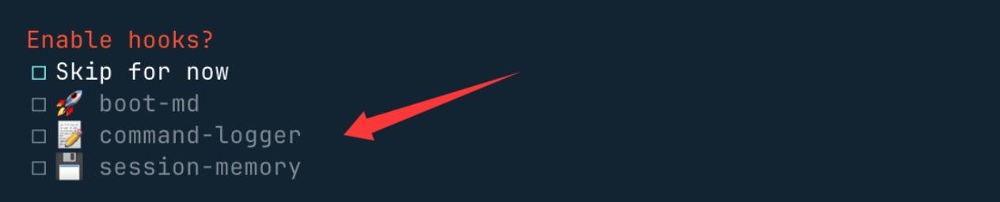
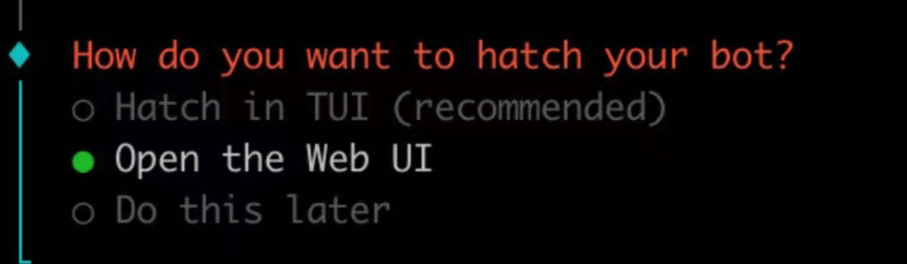

1 简介
OpenClaw 官网: https://openclaw.ai/
中文文档： https://docs.openclaw.ai/zh-CN
Github 地址：https://github.com/openclaw/openclaw
OpenClaw 技能合集: https://github.com/VoltAgent/awesome-openclaw-skills
2 安装OpenClaw
方式1：通过云服务器ECS预置镜像安装，2核2G起步即可支持OpenClaw运行。
方式2：基于容器服务镜像一键部署，零门槛秒级启动并支持弹性扩展。
方式3：依托AI云桌面预置镜像灵活部署，支持Windows、Mac、iOS、Android多端登录。
方式4：本地脚本一键安装（推荐）
1）macOS/Linux：
curl -fsSL https://openclaw.ai/install.sh | bash
2）Windows：
# PowerShell
iwr -useb https://openclaw.ai/install.ps1 | iex
# CMD
curl -fsSL https://openclaw.ai/install.cmd -o install.cmd && install.cmd && del install.cmd
它会完成环境检测，并且安装必要的依赖，还会启动 onboarding(设置向导) 流程。
后期要重新进入设置向导，可以执行以下命令：
openclaw onboard --install-daemon
方式5：手动安装
需要 Node.js ≥22 并完成基本配置
方式6：从源码安装
2.1 方式4
执行脚本安装完成后进入 onboarding(设置向导) 流程：
-
会提醒你这个龙虾能力很强，当然风险也很大，我们选 yes
-
接下来我们就选快速启动 QuickStart 选项
-
接下来我们需要配置一个大模型，Model/Auth Provider 选择 AI 供应商。
认证配置文件（OAuth + API 密钥）在~/.openclaw/agents/<agentId>/agent/auth-profiles.json，后期也可以在这个文件上修改。
可以先选最后一个 Skip 暂时跳过 -
其他配置，比如端口的设置 Gateway Port，按默认的 18789 即可，比如 Skills、包的安装管理器选 npm 或其他，可以一路 Yes 下去。
-
选一些自己喜欢的 skills，也可以直接跳过，使用空格按键选择：

-
这些 API key，没有的直接选 no

-
最后这三个钩子可以开启，使用空格按键选择，主要做内容引导日志和会话记录

-
选择Open the Web UI，使用浏览器打开：

安装完后，就会自动访问 http://127.0.0.1:18789/chat，就可以打开聊天界面让它开始工作。
2.2 方式1
以联通云为例
-
购买云服务器ECS，并选择OpenClaw镜像。
规格大于等于2C2G即可。 该云服务器创建成功后，已具备OpenClaw应用以及初始环境。 -
获取API Key
在联通云AI服务平台选择“服务接入”，点击“创建服务”。选择您所需要的大模型类型，获得API Key。 或购买CodingPlan，获得API Key。 -
OpenClaw配置（采用联通云内置脚本一键部署）（自定义配置见 https://support.cucloud.cn/document/127/571/128.html?id=128&arcid=6999 ）
通过SSH或VNC连接进入云服务器ECS
>ssh 用户名@公网IP地址
># 然后输入你的密码
注意：为保证安全使用OpenClaw，OpenClaw云服务器ECS在创建时，系统为您分配默认专有网络VPC、默认子网、默认安全组，
所以在创建完成时，请您进入云服务器后，执行以下命令，检查并配置DNS解析服务：
>vim /etc/resolv.conf
在打开的文件中，确认是否存在nameserver配置项。若未配置或需要修改，请添加以下内容（以Google公共DNS为例）: nameserver 8.8.8.8
先按i进入编辑模式，在文件中添加 nameserver 8.8.8.8 ，再按esc退出编辑模式，输入:wq（或:x）保存并退出（注意：输入法要是英文）
下载最新的脚本并赋予执行权限
>curl -o update-openclaw-config.py https://console.cucloud.cn/console/subApp/woc-ecs-beta/assets/update-openclaw-config.py
>chmod +x update-openclaw-config.py
运行脚本，按提示进行配置（配置钉钉见 https://support.cucloud.cn/document/127/571/128.html?id=128&arcid=7008 ）
>./update-openclaw-config.py
之后可以在终端输入以下内容启动OpenClaw并交互
>python3 -m openclaw.cli
2.3 常用命令
| 命令分类 | 功能描述 | 具体命令 |
|---|---|---|
| 状态查看 | 查看整体服务状态 | openclaw status |
| 查看 Gateway 网关状态 | openclaw gateway status |
|
| 手动运行 | 前台运行 Gateway 网关 | openclaw gateway --port 18789 --verbose |
| 安装后操作 | 运行新手引导（安装守护进程） | openclaw onboard --install-daemon |
| 快速系统检查 | openclaw doctor |
|
| 检查 Gateway 网关健康状态 | openclaw status + openclaw health |
|
| 打开可视化仪表板 | openclaw dashboard |
2.4 卸载
# 使用内置卸载程序
openclaw uninstall
非交互式（自动化 / npx）：
openclaw uninstall --all --yes --non-interactive
npx -y openclaw uninstall --all --yes --non-interactive
3 配置大模型
步骤1：打开配置文件。
运行以下命令打开 Web UI，然后在Web UI的左侧菜单栏中选择Config > Raw。
openclaw dashboard
步骤2：修改配置文件。
1）在 JSON 根对象中加入如下 models 配置（如果已存在则替换）。
-
请将
替换为您的 Coding Plan 专属API Key -
在baseUrl中填写Coding Plan的BaseUrl。目前套餐仅支持贵阳基地二区，使用openai接口协议时，填写https://aigw-gzgy2.cucloud.cn:8443/v1
"models": {
"mode": "merge",
"providers": {
"unicom-cloud": {
"baseUrl": "https://aigw-gzgy2.cucloud.cn:8443/v1",
"apiKey": "<YOUR_API_KEY>",
"api": "openai-completions",
"models": [
{
"id": "MiniMax-M2.5",
"name": "MiniMax-M2.5",
"reasoning": false,
"input": ["text"],
"cost": { "input": 0, "output": 0, "cacheRead": 0, "cacheWrite": 0 },
"contextWindow": 202752,
"maxTokens": 16384
}
]
}
}
}
2）找到 agents.defaults 对象，并替换或添加以下两个字段：、
"model": {
"primary": "unicom-cloud/MiniMax-M2.5"
},
"models": {
"unicom-cloud/MiniMax-M2.5": {}
}
步骤3：保存配置
如果在Web UI中修改，先单击右上角 Save 保存，然后单击 Update来使配置生效。
如果在终端中修改，先保存文件并退出，然后运行以下命令来使配置生效。
openclaw gateway restart
步骤4：使用
在终端运行以下命令，可以用 Web UI 的方式使用 OpenClaw。
openclaw dashboard
4 skills
使用 ClawHub 查找、安装技能
ClawHub 技能仓库地址：https://clawhub.ai/
ClawHub 国内镜像：https://skillhub.tencent.com/
安装 ClawHub 工具：
# 推荐方式（npx 无需全局安装）
npx clawhub@latest --version
# 或全局安装（方便以后直接用 clawhub 命令）
npm install -g clawhub
# 或者用 pnpm
pnpm add -g clawhub
# 登录
clawhub login
# 搜素skill
clawhub search "postgres backups"
# 下载安装新技能
clawhub install my-skill-pack
# 批量更新已安装技能
clawhub update --all
5 插件
常用命令
| 命令 | 作用 | 说明 |
|---|---|---|
vim /etc/resolv.conf |
配置 DNS | 创建 OpenClaw 的 ECS 实例后，配置 DNS 解析服务（如修改 nameserver）。 |
ps -ef \| grep open |
查询服务状态 | 检查 OpenClaw 相关进程是否已启动（如 openclaw-gateway）。 |
openclaw gateway run |
启动服务 | 正常启动 OpenClaw 服务（前台运行，终端会持续输出日志）。 |
openclaw gateway --force |
强制重启服务 | 杀死旧进程并重新启动 OpenClaw 服务（适用于服务异常时强制恢复）。 |
openclaw logs --follow |
实时查看日志 | 跟踪 OpenClaw 执行过程中的日志输出（类似 tail -f）。 |

| 功能分类 | 命令 | 说明 |
|---|---|---|
| 基础操作 | openclaw start |
启动 OpenClaw 服务 |
openclaw stop |
停止 OpenClaw 服务 | |
openclaw restart |
重启 OpenClaw 服务 | |
openclaw status |
查看服务运行状态 | |
| 网关管理 | openclaw gateway start |
启动网关服务 |
openclaw gateway stop |
停止网关服务 | |
openclaw gateway restart |
重启网关服务 | |
openclaw gateway status |
查看网关状态（包括监听端口、服务健康度等） | |
| 配置管理 | openclaw config get <path> |
查看指定配置项的值（如 config get models.default） |
openclaw config set <path> <value> |
修改配置项（如 config set gateway.port 18789） |
|
openclaw configure |
交互式配置向导（模型、通道、技能等） | |
| 模型与技能管理 | openclaw models list |
列出所有可用模型 |
openclaw models set <model> |
切换默认模型（如 models set claude-3-5） |
|
openclaw skills list |
列出所有可用技能 | |
openclaw skills enable <name> |
启用指定技能（如 skills enable file-organizer） |
|
| 日志与诊断 | openclaw logs |
查看实时日志 |
openclaw logs --tail=100 |
查看最近 100 行日志 | |
openclaw doctor |
系统诊断与自动修复（推荐在遇到问题时运行） | |
| 通道管理 | openclaw channels list |
列出已连接的聊天通道（如 Telegram、Discord 等） |
openclaw channels add --channel telegram |
添加 Telegram 通道（需提前配置 API Token） | |
| 内存管理 | openclaw memory search "关键词" |
搜索长期记忆或每日日志中的内容 |
| 定时任务 | openclaw cron add --name "任务名" --cron "0 9 * * *" --message "提醒内容" |
添加每日定时任务（如早上 9 点的提醒） |
| 高级命令 | openclaw dashboard |
打开 Web 控制面板（默认地址 http://127.0.0.1:18789） |
openclaw update |
检查并更新 OpenClaw 到最新版本 | |
openclaw reset |
重置本地配置（谨慎使用，会清除所有自定义设置） |
常见问题
-
若您在使用OpenClaw时，出现“no output”字样：
可能原因为客户端无法访问大模型，建议检查虚拟机与大模型的连通性，如未配置DNS导致与大模型无法链接。 -
如果下载最新的脚本赋予执行权限时报如下错误，则可通过配置DNS解析进行解决。

常用命令
| 命令 | 作用 | 说明 |
|---|---|---|
openclaw onboard |
启动配置向导 | 交互式配置，如果遇到问题可以重新执行引导 |
openclaw gateway install |
安装服务 | 同时启动服务，并设置开机自启 |
openclaw gateway start |
启动服务 | 需要先执行 install 命令 |
openclaw gateway stop |
停止服务 | 会卸载服务（注意与 start 的依赖关系） |
openclaw gateway status |
查看状态 | 检查服务是否正在运行 |
openclaw logs --follow |
查看实时日志 | 跟踪执行过程中的日志输出（类似 tail -f） |
其他
OpenClaw 的 Web 控制面板
root@open:~# openclaw dashboard
🦞 OpenClaw 2026.2.9 (33c75cb) — Turning "I'll reply later" into "my bot replied instantly".
Dashboard URL: http://127.0.0.1:18789/#token=b0cafaae9480bbfce097f058f7c3a52c7e5d5250ea9cefc4
在 你的本地电脑（而非服务器）的终端中运行以下命令，将服务器的 18789 端口映射到本地的 18789 端口：
ssh -N -L 18789:127.0.0.1:18789 root@42.4.62.221
- -N：不执行远程命令（仅端口转发）。
- -L 18789:127.0.0.1:18789：将本地 18789 端口转发到服务器的 127.0.0.1:18789。
- root@42.4.62.221：服务器的 SSH 地址（替换为你的实际 IP）。
保持 SSH 隧道运行，然后在本地浏览器中访问以下 URL：http://localhost:18789/
如果进去之后报：
disconnected (1008): unauthorized: gateway token missing (open a tokenized dashboard URL or paste token in Control UI settings)
在云服务器上执行
openclaw config get gateway.auth.token
输出的那一串就是 Gateway Token
在 Web 界面中： 1. 左侧菜单点 Control → Overview； 2. 页面里找到 Gateway Access / Gateway Access Panel； 3. 在 Gateway Token 输入框里粘贴刚才查到的 token； 4. 点击 保存 / 连接。
或者直接而用 openclaw dashboard 命令返回的链接，他已经自带token。
服务常驻
在这个镜像里，OpenClaw 并没有“常驻后台服务”，每次 SSH 里敲命令都是一次性前端进程
systemctl status openclaw
systemctl status openclaw-daemon
都显示 Unit ... could not be found. 说明镜像里并没有预先配置好的 openclaw.service。
所以没有后台 Gateway 常驻。
正确用法是：让 Gateway 以服务形式常驻后台，SSH 只是用来建隧道 / 偶尔维护。
官方推荐：把 Gateway 注册为系统服务
Linux 下用 systemd 用户服务 openclaw-gateway.service，命令是：
openclaw gateway install # 安装为系统服务（开机自启）
openclaw gateway restart # 重启
# openclaw gateway stop # 停止
openclaw gateway status
openclaw status
# 如果显示 Runtime: running、RPC probe: ok，说明 Gateway 已经在后台正常运行